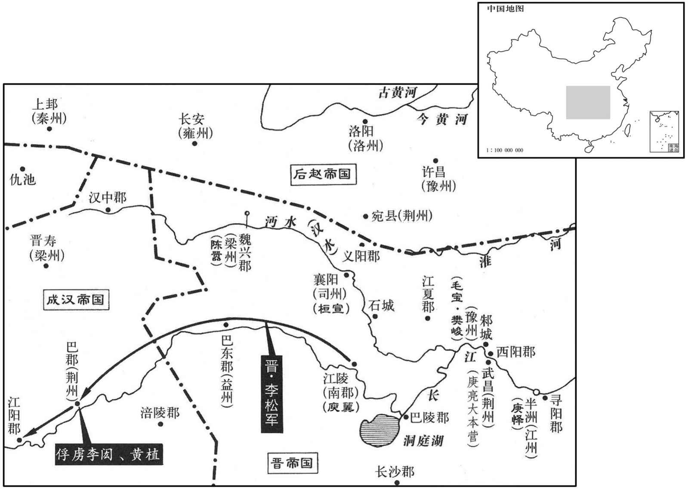

公元339年资治通鉴：本年记事、原文与白话对照
按原书编年位置阅读；追叙和史论不等于本年发生的事件。白话采用所据译本，缺译不以生成译文补齐。
卷96 · 本年记事
公元339年 · 339年 · 本卷无单列记事
胡注本未在本卷单列这一年记事；不能据此认为当年没有历史事件。

本年形势与背景参考图
译本中未与胡注本可靠对应的内容
以下另列供核对版本差异，不并入胡注本正文。
译本所附古文
[1]春，正月，辛丑，大赦。
译本白话
春季，正月，辛丑（二十五日），大赦天下。
译本所附古文
太常蔡谟议论，认为：“时机有利与不利，道有伸有屈，如果不考虑强弱的形势轻举妄动，那么会迅速败亡，有什么功业！当今之计，不如自蓄威势，等待时机。时机的可否在于胡虏的强弱，而胡虏的强弱又在于石虎的能力。自从石勒起兵，石虎便经常充当武将，百战百胜，于是平定中原，所占据的地域，与当年的魏国相当。石勒死后，石虎挟持继位的君主，诛戮将相。平定内乱之后，又翦灭和削弱外寇，一举攻取金墉，再战便擒获石生，诛杀石聪如同路拾遗物，战胜郭权如同振毁槁木，四周国境之内，不失尺土。由此看来，石虎是有才能呢，还是没有才能呢？论议者因为过去胡虏进攻襄阳不能取胜，便认为他无能为力。然而百战百胜的强敌却因没有攻取一城就以为低劣，好比射箭的人百发百中，只有一次失误，能够说他拙劣吗？ 且石遇，偏师也，桓平北，边将也，所争者疆易之士，利则进，否则退，非所急也。今征西以重镇名贤，自将大军欲席卷河南，虎必自帅一国之众来决胜负，岂得以襄阳为比哉！今征西欲与之战，何如石生？若欲城守，何如金墉？欲阻沔水，何如大江？欲拒石虎，何如苏峻？凡此数者，宜详校之。
译本白话
“况且，石遇的军队只是赵的偏师，桓宣是位戌边的将领，他们争夺的是疆土的伸缩，有利就进，不利则退，不是紧迫的问题。现在征西将军庾亮，以重镇名贤的地位和身份亲自率领大军试图席卷黄河以南，石虎必定亲自率领全国之众前来一决胜负，哪能与襄阳之战相比呢！现在征西将军想与石虎交战，比起石生如何？如果想据城固守，比起金墉城如何？如果想依仗沔水的天险，比起大江又如何？如果想抗拒石虎，比起抗拒苏峻又如何？凡此种种，应当仔细考校。
石生猛将，关中精兵，征西之战殆不能胜也！又当是时，洛阳、关中皆举兵击虎，今此三镇反为其用；方之于前，倍半之势也；石生不能敌其半，而征西欲当其倍，愚所疑也。苏峻之强不及石虎、沔水之险不及大江；大江不能御苏峻而欲以沔水御石虎，又所疑也。昔祖士稚在谯，佃于城北界，胡来攻，豫置军屯以御其外。谷将熟，胡果至，丁夫战于外，老弱获于内，多持炬火，急则烧谷而走。如此数年，竟不得其利。当是时，胡唯据河北，方之于今，四分之一耳；士稚不能捍其一而征西欲以御其四，又所疑也。
“石生是猛将，拥有关中的精锐士兵，庾亮若要攻击恐怕难以取胜。再说那时洛阳、关中都起兵攻击石虎，现在这三镇反而被石虎所用。比起从前，石虎现在实力有超出一倍的势头。石生不能抵挡相当现在一半的实力，而征西将军却想抵挡超出当年一倍的力量，这是我所疑惑的。苏峻的强大比不上石虎，沔水的天险比不上大江，大江都不能阻挡苏峻，却想依靠沔水抵挡石虎，这又是令人怀疑的。当初祖逖驻守谯，在城北边垦茺种田，担心胡虏来攻，预先设置军屯在外围阻挡。谷物快要成熟时，胡虏果真前来，壮丁在外围争战，老弱在内收获，许多人手持火炬，战况紧急时来不及收获，就焚毁庄稼逃走。如此多年，最终也没有得到屯田的利益。在那个时候，胡虏只占据了河北，比起现在，只是四分之一而已。祖逖不能抵御当初的一，而征西将军却想抵御现在的四，又是令人疑惑的。
然此但论征西既至之后耳，尚未论道路之虑也。自沔以西，水急岸高，鱼贯溯流，首尾百里。若胡无宋襄之义，及我未阵而击之，将若之何？今王土与胡，水陆异势，便习不同；胡若送死，则敌之有余，若弃江远进，以我所短击彼所长，惧非庙胜之算。”
译本所附古文
“然而，这还只是讨论征西将军到达中原以后的情况，还没讨论路途方面的忧虑。沔水以西，水急岸高，舟船只能溯流鱼贯而上，往往首尾相衔百里。如果胡虏没有宋襄公不攻击半渡之人的仁义之举，乘我方军队尚未列阵时攻击，后果将会怎样？现在我们与胡虏，水陆地势不同，熟悉的技能也不同，胡虏如果前来送死，那么我们战胜他们有余力；如果要放弃长江向远方进发，用我们的短处攻击敌人的长处，恐怕这不是胜于庙堂之中的成算。” 朝议多与谟同。乃诏亮不听移镇。 朝廷的评论大多与蔡谟相同，于是成帝下诏不让庾亮转移镇守地。
译本白话
燕前军师慕容评、广威将军慕容军、折冲将军慕舆根、荡寇将军慕舆袭赵辽西，俘获千余家而去。赵镇远将军石成、积弩将军呼延晃、建威将军张支等追之，评等与战，斩晃、支首。
译本所附古文
[4]前燕国前军师慕容评、广威将军慕容军、折冲将军慕舆根、荡寇将军慕舆攻袭赵的辽西，俘获民众一千多家后离去。后赵镇远将军石成、积弩将军呼延晃、建威将军张支等人追击，慕容评等同他们交战，斩杀呼延晃和张支。
译本白话
段辽谋反于燕，燕人杀辽及其党与数十人，送辽首于赵。
译本所附古文
[5]段辽图谋反叛前燕国，前燕人杀死段辽及其门党几十人，把段辽首级送给后赵。
译本白话
五月，代王什翼犍会诸大人于参合陂，议都源川。其母王氏曰：“吾自先世以来，以迁徙为业；今国家多难，若城郭而居，一旦寇来，无所避之。”乃止。
译本所附古文
[6]五月，代王拓跋什翼犍在参合陂会见诸部大人，商议定都于源川。母亲王氏说：“我们从祖先开始，就以迁徙为业，现今国家多难，如果修筑城郭定居，一旦敌寇进犯，就没有躲避之处了。”定都之事便告中止。
译本白话
代人谓他国之民来附者皆为乌桓，什翼犍分之为二部，各置大人以监之。弟孤监其北，子君监其南。
代国人把别国民众前来归附的都称为乌桓，拓跋什翼犍把他们分成两个部落，各自设置大人监察。兄弟拓跋孤监察北部，儿子拓跋君监察南部。
什翼犍求昏于燕，燕王以其妹妻之。
拓跋什翼犍向前燕求婚，前燕王慕容把自己的妹妹嫁给他。
译本所附古文
当初，王导和庾亮共同向成帝举荐丹杨尹何充，请求作为自己的副职，并且说：“我死的时候，希望提拔何充到内廷供职，那么国家就无可忧虑了。”因此授予何充吏部尚书。王导去世后，成帝征召庾亮担任丞相、扬州刺史、录尚书事，庾亮固辞不受。辛酉（十九日），任用何充为护军将军，庾亮的兄弟、会稽内史庾冰任中书监、扬州刺史、参录尚书事。 冰既当重任，经纶时务，不舍昼夜，宾礼朝贤，升擢后进，由是朝野翕然称之，以为贤相。初，王导辅政，每从宽恕；冰颇任威刑，丹杨尹殷融谏之。冰曰：“前相之贤，犹不堪其弘，况如吾者哉！”范汪谓冰曰：“顷天文错度，足下宜尽消御之道。”冰曰：“玄象岂吾所测，正当勤尽人事耳。”又隐实户口，料出无名万余人，以充军实。冰好为纠察，近于繁细，后益矫违，复存宽纵，疏密自由，律令无用矣。 庾冰担当重任后，治理政务不分昼夜，对朝廷贤臣彬彬有礼，提拔后进，因此朝野人士都同声称赞，认为他是贤相。当初，王导辅佐朝政，每每采取宽恕态度。庾冰则时常依靠威严刑令，丹杨尹殷融劝谏他，庾冰说：“凭以前丞相那样的贤良，尚且不能胜任宽弘，何况像我这样人呢！”范汪对庾冰说：“不久前天象错乱失度，足下应当采取消除、防御的对策。”庾冰说：“玄奥的天象岂是我所能测知的，这正应当勤奋地兢尽人事。”庾冰又审度核实户口，清理出没有姓名的人一万多名，用以充实军队。庾冰喜好举发检察，近于繁细，后来矫枉过正，又宽松纵容，更加远离正道。宽松或是严密，均出自己意，因此律令便没有用了。
译本白话
八月，壬午，复改丞相为司徒。
译本所附古文
[9]八月，壬午（初十），晋又改丞相官职为司徒。
译本白话
南昌文成公郗鉴疾笃，以府事付长史刘遐，上疏乞骸骨，且曰：“臣所统错杂，率多北人，或逼迁徙，或是新附，百姓怀土，皆有归本之心；臣宣国恩，示以好恶，处与田宅，渐得少安。闻臣疾笃，众情骇动，若当北渡，必启寇心。大常臣谟，平简贞正，素望所归，谓可以为都督、徐州刺史。”诏以蔡谟为太尉军司，加侍中。幸酉，鉴薨，即以谟为征北将军、都督徐·兖·青三州诸军事、徐州刺史，假节。
译本所附古文
[10]南昌文成公郗鉴病重，将幕府事务交给长史刘遐，自己上疏乞求卸职，而且说：“我所统领的人员错综杂乱，一般来说北方人居多，有的是受威逼迁来的，有的是新近归附的，百姓心恋故土，都有归本的心愿。我宣扬国家的恩德，晓谕好恶之别，分给他们田地住宅，这才逐渐换得稍稍的平定。听说我病重，众人心情惊骇骚动，如果真的向北渡江，必然引动敌人侵犯的心思。太常蔡谟平简贞正，为时望所归，我认为可以出任都督及徐州刺史。”成帝下诏任蔡谟为太尉军司，授予侍中。辛酉（疑误），郗鉴去世，当即任命蔡谟为征北将军，都督徐州、兖州、青州诸军事，徐州刺史，假节。 时左卫将军陈光请伐赵，诏遣光攻寿阳，谟上疏曰：“寿阳城小而固。自寿阳至琅邪，城壁相望，一城见攻，众城必救。又，王师在路五十余日，前驱未至，声息久闻，贼之邮驿，一日千里，河北之骑，足以来赴。夫以白起、韩信、项籍之勇，犹发梁焚舟，背水而阵。今欲停船水渚，引兵造城，前对坚敌，顾临归路，此兵法之所诫。若进攻未拔，胡骑卒至，惧桓子不知所为而舟中之指可掬也。今光所将皆殿中精兵，宜令所向有征无战。而顿之坚城之下，以国之爪士击寇之下邑，得之则利薄而不足损敌，失之则害重而足以益寇，惧非策之长者也。”乃止。 当时左卫将军陈光请求伐后赵，成帝下诏派陈光进攻寿阳，蔡谟上疏说：“寿阳城小但坚固，从寿阳至琅邪，城墙互相可以望见，一城受攻，各城必然来救援。再者，君王的军队在路途上需要五十多天，先驱者还没到达，消息已经传播很久了，敌贼的邮驿，以一日千里的速度传递消息，那么黄河以北的骑兵，就完全可以赶来救援。以白起、韩信、项籍那样的勇将，还要挖断桥梁，焚毁舟船，背水而战。现在想把舟船停泊在水渚中备用，领兵前往敌城，前方面对强敌，回头顾望归路，这正是兵法所戒的大忌。如果进攻不能取胜，胡虏的骑兵突然到达，恐怕中行桓子不知所措、士兵争船渡河，以致被砍断的手指双手可捧的局面又将重演。现在陈光统领的都是宫中精兵，应该让他们到哪里都是只有出征但不交战。现在却屯兵于坚城之下，用国家的宫中精锐攻击敌人的下等城邑，取胜则得利微小不足以给敌人造成多大伤害，失败则损失惨重足以有利于敌寇，这恐怕不是周全的计策。”伐后赵之事这才中止。
译本白话
初，陶侃在武昌，议者以江北有邾城，宜分兵戍之；侃每不答，而言者不已。侃乃渡水猎，引将佐语之曰：“我所以设险而御寇者，正以长江耳。邾城隔在江北，内无所倚，外接群夷。夷中利深；晋人贪利，夷不堪命，必引虏入寇。此乃致祸之由，非以御寇也。且吴时戍此城用三万兵，今纵有兵守，亦无益于江南；若羯虏有可乘之会，此又非所资也。”
译本所附古文
[11]当初，陶侃镇守武昌，有人论议，认为长江北岸有邾城，应当分兵戍守。陶侃常常不作答复，但总有人提及此事。陶侃于是渡江围猎，召来将佐们告诉他们说：“我之所以设置险阻防御敌寇，正因为有长江而已。邾城隔在长江北岸，自身没有可以依仗的天险，外部与各夷族接壤，对夷人来说利害关系更大。如果我们贪图小利，夷人不能忍受，必定领兵前来侵犯，这正是导致祸乱的根由，不是用以抵御敌寇的好方法。况且吴国当初戍守此城，动用了三万兵众，现在纵然派兵戍守，对江南来说也没什么太大的好处；如果羯族敌虏有可乘之机，占据邾城又没有什么太大的帮助。” 及庾亮镇武昌，卒使毛宝、樊峻戍邾城。赵王虎恶之，以夔安为大都督，帅石鉴、石闵、李农、张貉、李菟等五将军、兵五万人寇荆、扬北鄙，二万骑攻邾城。毛宝求救于庾亮，亮以城固，不时遣兵。 等到庾亮镇守武昌，最终还是派毛宝、樊峻戍守邾城。后赵王石虎憎恶，任用夔安为大都督，率同石鉴、石闵、李农、张貉、李菟五位将军，兵众共五万人侵犯荆州和扬州的北部边境，另派二万骑兵进攻邾城。毛宝向庾亮求救，庾亮认为邾城城池坚固，没有及时派兵。
译本白话
九月，石闵败晋兵于沔阴，杀将军蔡怀；夔安、李农陷沔南；朱保败晋兵于白石，杀郑豹等五将军；张貉陷邾城，死者六千人，毛宝，樊峻突围出走，赴江溺死。夔安进据胡亭，寇江夏；义阳将军黄冲、义阳太守郑进皆降于赵。安进围石城，竟陵太守李阳拒战，破之，斩首五千余级，安乃退。遂掠汉东，拥七千余户迁于幽、冀。
九月，石闵在沔南打败晋兵，杀死将军蔡怀。夔安、李农攻陷沔南，朱保在白石打败晋兵，杀死郑豹等五位将军。张貉攻下邾城，邾城战死者有六千人。毛宝、樊峻突围出逃，渡江时溺水而死。夔安进据胡亭，侵犯江夏，义阳将军黄冲，义阳太守郑进都投降赵军。夔安前进包围石城，竟陵太守李阳发兵抵抗，战败夔安，斩首五千多级，夔安这才退走，乘势劫掠汉水以东，挟持民众七千多户迁徙到幽州、冀州。
是时庾亮犹上疏欲迁镇石城，闻邾城陷，乃止。上表陈谢，自贬三等，行安西将军；有诏复位。以辅国将军庾怿为豫州刺史，监宣城、庐江、历阳、安丰四郡诸军事、假节，镇芜湖。
此时庾亮还在上疏想将镇守地移至石城，听说邾城失陷，这才作罢。给成帝上表谢罪，自行乞求贬职三等，行安西将军职位。成帝下诏让他恢复原位，任命辅国将军庾怿为豫州刺史，监宣城、庐江、历阳、安丰四郡诸军事，假节，镇守芜湖。